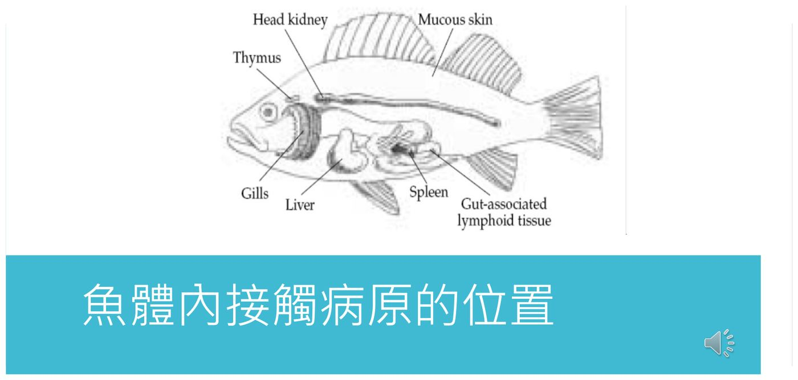
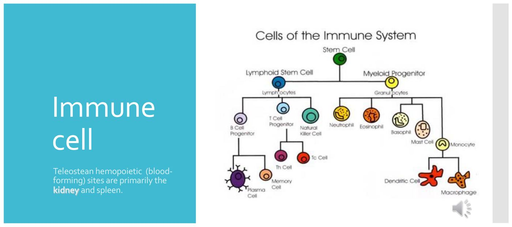
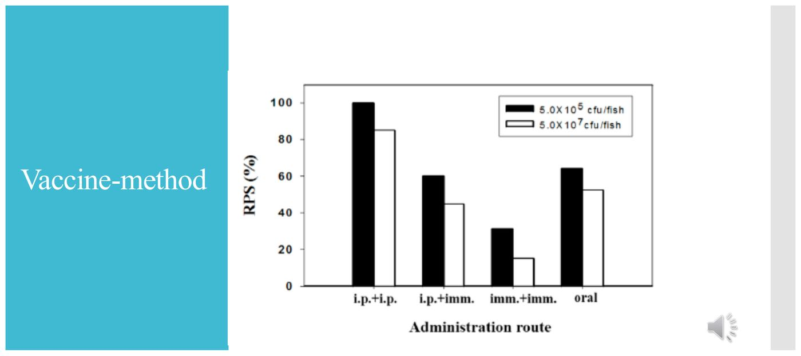
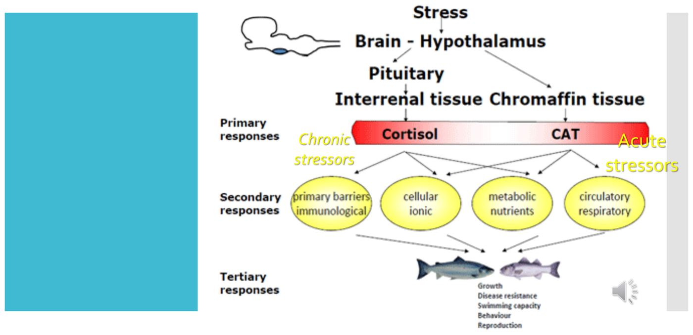
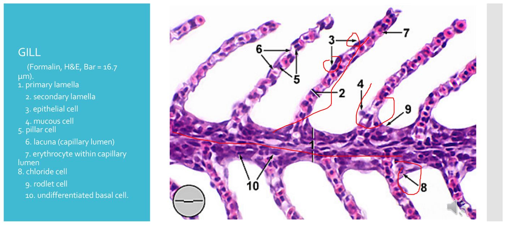
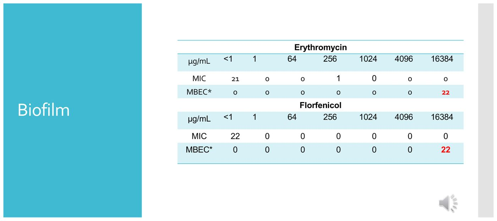

大方向與重點摘要
- 這章在講什麼
- 講義的目的是「了解魚類免疫，以利後續疫苗及魚類診斷的相關知識」（p.3）。順序是：壓力（緊迫會抑制免疫）→ 魚類免疫系統（第一道防線、免疫器官、先天與適應性免疫、腸道免疫）→ 對細菌的免疫反應（生物膜如何躲過免疫）→ 疫苗（投予方式與各種疫苗）。講義幾乎都是圖與英文關鍵字，內容很精簡，上課會補充很多；本頁在講義之外另有黃框「讀書補充Note」，是依文獻與一般教科書補的，與講義內容分開標示。
- 這章要抓的重點
-
- 免疫器官：腎臟血流慢、抗原被困住，前段（anterior）是「memory」發生處；脾臟次之；肝臟可能產生補體成分（p.53）。
- 疫苗投予方式：注射、浸泡、口服各有優缺點；口服最適合稚魚、減少緊迫；浸泡操作簡單但容易汙染、免疫機制待闡明（p.86–91）。
- 壓力：皮質醇升高會抑制吞噬細胞、降低循環淋巴球；壓力三階段（反抗、適應、衰竭）與三級反應（初級、次級、第三級）。
- 第一道防線：鰓與皮膚是魚最先接觸病原處；黏液、抗菌胜肽、溶菌酶（作用於肽聚醣）。
- 生物膜：抗生素需要比 MIC 高很多的濃度才殺得到（MBEC），並躲避補體、把巨噬細胞推向 M2。
- 各類疫苗：不活化、減毒、次單位、DNA、類毒素、RNAi（siRNA）、生物膜疫苗。
- 容易混淆
- 先天（非特異性）與適應性免疫：溶菌酶、抗菌胜肽、吞噬、NK 樣細胞屬先天；T 細胞、B 細胞與抗體屬適應性。MHC I 與 MHC II：I 呈現給 CD8+ 毒殺 T 細胞、II 呈現給 CD4+ 輔助 T 細胞。MIC 與 MBEC：前者殺浮游菌，後者殺生物膜裡的菌。
- 考試可能怎麼問
（推測） - 免疫器官與功能（學長姐回憶 2023 助教預告）、疫苗投予方式與優缺點（同上，加分題）；壓力的生理反應；溶菌酶作用；國考曾考「鮭魚 Aeromonas salmonicida 的商品化油質疫苗」（102-2）與 NNV（102-1）。細節見「考古與國考對照」一節。
講義內容與「讀書補充Note」嚴格分開：正文只寫講義有的（附 p.N）；黃框是依文獻補的，標「補充：依一般教科書／文獻」並說明講義沒寫，文獻不確定的標「待核對」。講義夾帶的選擇題（p.5、8、10、13、32、35）答案已與同一份講義正文核對，彼此一致。講義沒有作者署名；圖片與 PDF 已獲使用者確認可公開。
免疫器官與免疫細胞 Immune Organs & Cells
考古年年有（學長姐回憶 2023 助教預告：免疫器官，腎臟＝memory 所在、脾臟…）。先記三個器官：腎臟（特別是前段）、脾臟、肝臟。
免疫器官比較表必考

| 器官 | 講義的描述（p.53–55） | 要記的重點 |
|---|---|---|
| 腎臟 Kidney | 血液流經腎臟很慢，抗原被「困住」（trapped）或暴露給網狀細胞（reticular cells）、巨噬細胞、淋巴球；前段（Anterior）是「memory」發生處 | 最重要的免疫器官；造血部位之一（p.54：硬骨魚造血部位主要是腎臟與脾臟） |
| 脾臟 Spleen | 次於腎臟（secondary to kidney）；參與免疫反應與血球形成，含淋巴球與巨噬細胞 | 造血＋免疫；注射抗原後的反應由脾臟 melanomacrophage centers 與橢球體產生（p.87） |
| 肝臟 Liver | 可能參與補體（complement）成分的產生，對抗病力重要；「not real clear」（講義原話：不太清楚） | 補體來源；講義自己也說機制不明 |
| 網狀內皮系統（Reticuloendothelial system） | 由分布全身各組織、吞噬力很強的細胞組成（p.55） | 先天免疫的吞噬細胞網 |

非特異性（先天）免疫細胞必考
| 細胞 | 功能（講義 p.56） |
|---|---|
| 單核球與組織巨噬細胞 Monocytes & tissue macrophages | 免疫反應最重要的細胞；產生細胞激素；主要吞噬細胞，初次辨識與再次感染時最先殺死病原 |
| 嗜中性球 Neutrophils | 發炎早期的主要細胞；產生細胞激素招募免疫細胞到受損或感染處；在 I. punctatus（斑點叉尾鮰）具吞噬力，以細胞外機制殺菌 |
| 自然殺手樣細胞 Natural killer-like cells | 以受體結合標的細胞並使其溶解；對寄生蟲與病毒免疫重要 |
吞噬作用 Phagocytosis理解
- 最原始的防禦機制，分階段進行（p.63）：吞噬細胞沿趨化作用（chemotaxis，有方向）或化學動力作用（chemokinesis，無方向）移向異物（p.61 附圖）。
- ① 經凝集素（lectins）附著 → ② 吞入異物 → ③ 殺死與消化。殺菌機制分不依賴氧（低 pH、溶菌酶、乳鐵蛋白、蛋白水解／水解酶）與依賴氧兩類。
模式辨識受體 PRR 與干擾素理解
| 受體（p.57） | 辨識什麼 |
|---|---|
| TLR Toll-like receptor | 病原相關分子模式（PAMP） |
| CLR C-type lectin receptor | 病原表面的碳水化合物（CHO） |
| RLR RIG-I-like receptor | 感染細胞細胞質中的病毒 RNA |
| NLR Nod-like receptor | PAMP；危險相關分子模式（DAMP） |
| 清道夫受體 Scavenger receptors | DAMP |
讀書補充Note - 魚的免疫器官：和哺乳類差在哪？「腎臟＝memory」怎麼理解？
1. 這是講義沒寫的補充（補充：依文獻，來源見最後）。講義 p.53 只列腎臟、脾臟、肝臟三個器官與一句「Anterior is where memory occurs」。
2. 硬骨魚的淋巴器官
- 沒有淋巴結、沒有骨髓；有胸腺、脾臟、頭腎。
- 頭腎（head kidney，腎臟前段）是主要的造血組織，是哺乳類骨髓的功能對應器官；講義 p.9 把 glucocorticoid 的體外實驗說成「骨髓（bone marrow）」前驅細胞，整理者推測是原文照搬哺乳類用語，魚本身沒有骨髓（待核對原文）。
- 胸腺：T 細胞分化處；脾臟：次級器官；頭腎：B 細胞分化與 IgM 分泌細胞（漿細胞）主要所在。
- 講義 p.9 說急性緊迫或皮質醇使循環淋巴球聚集到胸腺與頭腎，血中淋巴球減少，與上述兩個器官角色相符。
3. 怎麼理解「腎臟前段＝memory 所在」
- 文獻指出抗體分泌細胞先出現在頭腎，其次脾臟，再來才是黏膜組織，頭腎是 IgM 漿細胞聚集處，與講義「前段是 memory 發生處」方向一致。
- 「memory」精確指哪一種記憶細胞、能存留多久，我沒有查到可靠的單一說法，標待核對；考試寫「腎臟前段（頭腎）是造血與抗體產生（記憶）的主要部位」即可。
4. 黏膜相關淋巴組織（MALT）
- 硬骨魚只有擴散型的 MALT，沒有 Peyer's patch、扁桃腺等有組織的結構。
- 共六處：腸（GALT）、皮膚（SALT）、鰓（GIALT）、嗅覺器官（NALT），以及頰部、咽部 MALT。
- 講義 p.51 圖標的「Gut-associated lymphoid tissue」「Mucous skin」「Gills」就是這些黏膜防線。
來源：Yu et al. 2020, Front Immunol 11:567941（連結）；PMC7566178、PMC5125549 摘要。以上為文獻層級的概述，不同魚種有差異。
疫苗投予方式 Vaccine Administration
考古年年有（學長姐回憶 2023 助教預告：疫苗給予方式，加分題 10 分）。講義 p.86：疫苗接種是對抗疾病最有效的方法（Plant & Lapatra, 2011），投予途徑有注射、浸泡、口服三種。
三種投予方式比較表必考

| 途徑 | 講義寫的（p.86–91） | 優點 | 缺點／限制 | 適用情境 |
|---|---|---|---|---|
| 注射 injection（腹腔注射 i.p. 等） | 硬骨魚（teleost）注射抗原後的免疫反應由脾臟的 melanomacrophage centers 及橢球體（ellipsoids）產生（p.87）。p.91 圖：腹腔注射＋腹腔注射追加的保護率最高 | （講義圖）保護率最高 | 講義沒有直接寫缺點（見下方補充：緊迫、人工、小魚不適用） | 較大的魚、需要高保護率時 |
| 口服 oral（拌入飼料） | 直接把疫苗添加入餌料施用，最理想、方便，可減少魚的緊迫壓力，使用量比浸泡型少、經濟，是最適用於稚魚免疫的方法（p.88）。製備法：酒精包埋法、飼料混合重新塑型（p.89） | 省人力、無緊迫、用量少、經濟、適合稚魚與大量魚群 | （講義圖）保護率不如注射追加（p.91 oral 約 64／52） | 稚魚、大量魚群 |
| 浸泡 immersion | 操作簡單、容易汙染、免疫機制尚待闡明（p.90） | 操作簡單 | 容易汙染；免疫機制不清；（講義圖）imm.+imm. 保護率最低 | 小魚、無法注射時 |
注射（針筒）、浸泡（水桶）、口服（魚吃飼料）三種。講義沒有寫劑量、休藥期與疫苗產品名稱，不可直接當用藥依據。
讀書補充Note - 疫苗投予方式的優缺點與實務（以專業魚病學角度補充）
以下為補充：依一般教科書／文獻，講義沒寫，數字不精確處標待核對。
1. 注射（最有效，但最累）
- 最有保護力，疫苗用量可精準、浪費少，可以加佐劑（常用油質佐劑）。
- 缺點：緊迫大、費工（一尾一尾打、需麻醉）、可能有佐劑副作用（腹腔黏連等）、太小的魚無法注射（一篇地中海養殖綜述寫約 <15 g 不實際，待核對）。
- 所以常見做法：稚魚浸泡或口服基礎免疫 → 魚長到足夠大再注射追加（類似講義 p.91 的 i.p.+imm. 概念，但該圖的設計講義沒有說明）。
2. 浸泡（簡單，但弱）
- 比注射緊迫小，適合小魚、可一次處理很多尾。
- 效果依疫苗種類而異：活的減毒疫苗效果較好，不活化疫苗效果較差；保護期常較短，常需追加（文獻綜述）。
- 黏膜（鰓、皮膚）直接接觸抗原，所以也被視為誘發黏膜免疫的途徑（Yu 2020），但浸泡後 Ig 反應研究仍不多，與講義說「免疫機制尚待闡明」一致。
3. 口服（最方便，但最難做好）
- 無緊迫、省人力、可大量群體施用。
- 主要問題是效果低：抗原在胃腸道被分解、可能產生口服耐受（oral tolerance）；常需要包埋保護（講義 p.89 的酒精包埋法就是一種）。
- 例外：智利鮭魚的口服疫苗（對 ISA、SRS）已大規模使用，報導超過 4,000 萬尾（Global Seafood Alliance 報導，數字待核對）。
4. 其他新途徑：肛門（anal）與鼻腔（nasal）等黏膜途徑有研究，仍屬發展中（Yu 2020）。
5. 一句話選擇：要最高保護 → 注射；魚太小 → 浸泡／口服；要省工 → 口服（但效力要驗證）。
來源：Yu et al. 2020, Front Immunol 11:567941；CIHEAM 地中海水產疫苗綜述；Global Seafood Alliance；PMC9660215（搜尋摘要，未逐篇精讀）。
讀書補充Note - 口服疫苗「酒精包埋法」「飼料混合重新塑型」是什麼？（文獻查核）
1. 講義寫了什麼
- 講義 P.89 只列兩個名稱：酒精包埋法、飼料混合重新塑型（「朔型」應為「塑型」），沒有文字說明；該頁有語音圖示，老師可能口頭講過，PDF 沒有收錄。
2. 查文獻的結果（補充）
- 「酒精包埋法」：
- 我用中英文關鍵字（fish oral vaccine、ethanol、coating、包埋）查了期刊、專利與官方資料，沒有找到任何一篇把這個名稱當成口服魚疫苗製法來描述，所以不能確定它的步驟或酒精的角色。
- 只看到一件馬來西亞專利把 ethanol 列為鏈球菌口服疫苗飼料配方的成分之一，沒有說明用途（來源：口服鏈球菌疫苗專利摘要）。
- 這個名稱可能是台灣或日本舊課程的講法，建議直接問老師，或回看課堂錄影這一頁的口述。
- 「飼料混合重新塑型」（整理者推測對應下列做法，待向老師確認）：
- 把疫苗與飼料粉混合後，再壓成顆粒並乾燥。例：亞洲海鱸（Asian seabass）的 vibriosis 不活化口服疫苗，疫苗混入飼料粉、以顆粒機成型、30℃ 乾燥 48 小時（Field efficacy of a feed-based inactivated vaccine against vibriosis in cage-cultured Asian seabass, Vaccines 2023，PMC9865705）。
3. 口服疫苗常見的製備方式（一般文獻整理）
- 表面塗覆（coating）：把疫苗噴或塗在成品飼料顆粒表面；專利例子是用油（如魚油）或增稠劑（海藻酸鹽、果膠等）把疫苗固定在顆粒上，用量約為飼料重量 1–5%。
- 混入製程（co-processing）：在飼料製造時就把疫苗混進去。
- 包埋／包覆（encapsulation）：把抗原包在載體裡保護，最常見是海藻酸鹽微球（alginate microspheres），其他有幾丁聚醣、PLGA、脂質體；也有用豐年蝦無節幼蟲當載體的石斑魚研究。目的是讓抗原通過胃腸不被破壞，到下段腸道才被吸收。
- 歷史做法：把甲醛殺死的菌（或凍乾菌體）直接拌進飼料，例如 Vibrio anguillarum 的凍乾菌體以 2 mg／g 飼料拌入（NOAA Marine Fisheries Review）。
4. 口服疫苗的限制（文獻，與講義 P.88 的優點互補）
- 抗原在胃腸可能被降解，所以要包埋保護。
- 保護力常不如注射；DNA 疫苗口服曾需要約 20 倍的劑量（rainbow trout 研究）。
- 持續低劑量餵食可能誘導耐受，保護力反而下降；田間常需要多次口服免疫。
- 這些限制正好對應講義 P.91 的圖：口服保護率不如注射追加。
來源（皆為補充，講義沒有寫）：Bøgwald & Dalmo 2021, Protection of Teleost Fish against Infectious Diseases through Oral Administration of Vaccines: Update 2021；Field Efficacy of a Feed-Based Inactivated Vaccine against Vibriosis in Cage-Cultured Asian Seabass；US 7998502，鮭魚口服疫苗的表面塗覆專利；NOAA Marine Fisheries Review，Vibrio anguillarum 口服菌苗。「酒精包埋法」本身未查到資料，待向老師確認。
壓力與免疫 Stress & Immunity
養殖環境惡化 → 緊迫 → 內分泌改變（皮質醇、兒茶酚胺）→ 免疫被抑制。這一節解釋為什麼第一週的水質問題會變成疾病。
壓力的定義與壓力源理解
- Selye (1973)：壓力是身體對任何要求的非特異性反應（p.11）。壓力反應被視為一種適應機制，讓魚應付真實或感知到的壓力源、維持恆定狀態；壓力可視為「恆定受威脅，由一組複雜的適應反應重新建立」（p.12–13，講義選擇題答 B 適應機制）。
- 壓力源改變魚的周圍環境（p.14）：化學（污染物、低氧、酸化）、物理（處理、捕撈、圈養、運輸）、感知（驚嚇、掠食者）。
- 依時間與頻率分急性（短暫，如處理）與慢性（持續或反覆暴露，造成長期生理反應）；兩者都嚴重損害生長與健康（p.15）。
| 壓力源類別 | 講義列舉（p.17–25） |
|---|---|
| 化學 Chemical | 水質不良、汙染、飼料組成、含氮與其他代謝廢物 |
| 生物 Biological | 族群密度、其他魚種、微生物、大型生物 |
| 物理 Physical | 溫度、光線、聲音／噪音 |
| 操作 Procedural | 處理、運輸（shipping）、疾病治療 |
- 光（p.21–23）：講義用暗、白光、藍光（450 nm）、綠光（525 nm）處理後比較魚體長、殘食次數（cannibalism）與血糖值，只有圖，講義沒有寫結論，不整理數值。
- 噪音（p.24，Smith et al., 2004, J Exp Biol）：誘發暴露魚的壓力反應、可造成暫時聽力喪失、專一化的魚更敏感、魚可隨時間恢復。
- 壓力後行為反應是最立即的徵象（p.26）：攝食、避敵、捕食、洄游、棲地選擇，可作為環境壓力指標。
壓力的三階段與 HPI 軸必考
| 階段（p.7） | 內容 |
|---|---|
| 1. 反抗期 resistance | 魚產生迴避行為，並藉生理調節恢復原有恆定。壓力訊息經中樞神經匯集到下視丘前葉（preoptic anterior hypothalamus）：一方面經自律神經傳給嗜鉻細胞（chromaffin cells），分泌兒茶酚胺入血，產生應急反應；另一方面下視丘分泌 CRF → 腦下垂體分泌 ACTH |
| 2. 適應期 adaptation | 長期受刺激下，體內生理調節逐漸達到新的恆定狀態 |
| 3. 衰竭期 exhaustion | 刺激過強或持續過久，個體來不及調整，或耗盡能量與激素前驅物，失去平衡而死亡 |

| 反應級別 | 內容（講義 p.27–34） |
|---|---|
| 初級反應 Primary | 啟動並分泌激素入血：兒茶酚胺（腎上腺素／正腎上腺素，戰或逃）來自嗜鉻組織（腎臟與心臟附近，酪胺酸羥化酶 TH 陽性）；皮質類固醇（皮質醇、皮質酮、可體松）來自腎間組織（interrenal），與壓力反應、滲透調節、蛋白質／碳水化合物代謝有關 |
| 次級反應 Secondary | 激素觸發：血糖上升（提供能量）、心跳加快、鰓血流增加、代謝率上升，造成血乳酸與血容比改變（循環淋巴球減少）。血糖升高是常見指標；腎上腺素作用短期、皮質醇作用長期 |
| 第三級反應 Tertiary | 全身性改變：生長率下降、抗病力下降、行為改變、存活率下降 |
血中皮質醇升高 → 抑制吞噬細胞、降低循環性 T 樣與 B 樣淋巴球。鱒魚在急性緊迫或直接注射皮質醇後，循環淋巴球趨向胸腺與頭腎淋巴組織，血中數量降低；體外實驗中糖皮質激素抑制單核球與顆粒球前驅細胞的分化增生。講義說淋巴球變化「目前還有很多尚未釐清」。
講義選擇題核對：p.8（反抗期的反應是「產生迴避行為」，B）、p.10（皮質醇升高→抑制吞噬細胞與降低淋巴球，B）、p.32（不是壓力生理變化的是「白血球數量增加」，C，與 p.31「循環淋巴球減少」一致）、p.35（第三級反應導致「行為改變」，C，與 p.34 一致）。
讀書補充Note - 壓力為什麼和疫苗、治療失敗有關？
補充：依一般教科書（講義沒寫；不是具體數字，無需查證的概念層次）。
- HPI 軸（下視丘—腦下垂體—腎間組織軸）相當於哺乳類的 HPA 軸；魚沒有獨立的腎上腺，腎間組織與嗜鉻組織分散在頭腎（講義 p.28–29 圖示在腎臟與心臟附近）。
- 臨床意義：運輸、分池、密度高、水質差、噪音都會讓皮質醇升高 → 免疫被抑制。這時候即使沒有新病原，原本潛伏的病原（如細菌）也容易爆發；在高壓力時打疫苗，效力也可能下降（這是一般觀念，沒有查到具體量化文獻，待核對）。
- 所以第一週強調的「先救環境」不只是避免直接死亡，也是維持免疫功能。
第一道防線：鰓、皮膚、黏液與溶菌酶 Barriers, Mucus & Lysozyme
講義 p.38：魚類最先接觸病原的位置。病原進入前，先要突破這幾道物理與化學防線。
鰓與皮膚理解
- 鰓 Gill（p.39–40）：氣體交換、離子調節（ionoregulation）、酸鹼調節、解毒（含氮廢物）。講義附鰓組織切片：初級鰓瓣、次級鰓瓣、上皮細胞、黏液細胞、柱狀細胞、毛細血管腔、紅血球、氯細胞、rodlet cell、未分化基底細胞。
- 皮膚 Skin（p.41）：表皮沒有死亡的角質化細胞，真皮為密度不一的結締組織；附圖標示 cuticle、杯狀細胞（goblet cell）、club cell、基底膜、鱗囊、色素細胞。

黏液、抗菌胜肽與溶菌酶必考
| 項目 | 講義內容 |
|---|---|
| 黏液 Mucus（p.42） | 困住微生物並持續抑制它們在體表定殖；感染時黏液分泌速率增加；魚的黏液對某些微生物有毒 |
| 抗菌胜肽 Antimicrobial peptides（p.43、46–47） | 12–80 個胺基酸，含 cathelin domain；附圖說明胜肽機制（A、B、C 三步） |
| 溶菌酶 Lysozyme（p.48–50） | 魚類研究最多的先天免疫反應之一；作用於細菌細胞壁的肽聚醣（peptidoglycan）層，造成細菌溶解；反應非常快，除了細菌，壓力等警報狀況後也會出現。附革蘭氏陽性與陰性菌壁對照圖（p.49） |
臨床連結（整理者推測）：講義 p.48 說壓力後溶菌酶會升高，所以血清溶菌酶活性可當作壓力與先天免疫的指標；講義沒有寫臨床檢驗方法。
適應性免疫：T 細胞、MHC 與抗體 Adaptive Immunity
講義這部分只有英文原文與圖，幾乎完全是一般免疫學概念；魚類特有的部分在黃框補充。
T 細胞與 MHC理解
| 項目 | 講義（p.65–68） |
|---|---|
| 輔助 T 細胞 Helper T（CD4+） | 通知 B 細胞開始製造抗體；活化其他 T 細胞與巨噬細胞；影響產生哪一種抗體 |
| 毒殺 T 細胞 Cytotoxic T（CD8+，CTL） | 成為殺手細胞，攻擊並消滅被感染的細胞 |
| MHC II（p.67） | 巨噬細胞吞入並處理抗原後，把抗原片段與 Class II MHC 一起呈現在表面，吸引並活化輔助 T 細胞 |
| MHC I（p.68） | 抗原片段與 Class I MHC 一起呈現，循環中靜止的毒殺 T 細胞受體辨識並結合；結合加上輔助 T 細胞使毒殺 T 細胞活化，攻擊並摧毀病變細胞 |
抗體理解
- p.69 圖：抗原被巨噬細胞攝入、呈現給輔助 T 細胞，刺激 B 細胞增殖為漿細胞（製造抗體）與記憶 B 細胞；再次接觸抗原時反應更快。
- p.71：人類的抗體種類（IgG、IgE、IgD、IgM、IgA）。p.72「Antibody in fish」圖只標示兩種：IgZ 與 IgM，附頭腎（head kidney）等器官位置；講義沒有文字說明。
讀書補充Note - 魚的抗體：IgM、IgD、IgT（IgZ）與哺乳類的差別
補充：依文獻（Yu et al. 2020；講義只標 IgZ、IgM 兩個，沒有講功能）。
- 魚有三種：IgM、IgD、IgT／IgZ，沒有 IgG、IgA、IgE。講義 p.72 的 IgZ 與 IgT 是同一類抗體的不同命名（依文獻）。
- IgM：主要的全身性（systemic）抗體，通常為四聚體；血清最多，也出現在黏液。
- IgT／IgZ：黏膜專用，被認為最古老的黏膜抗體，功能類似哺乳類 IgA；在腸、鰓、皮膚等黏膜對病原反應中占主導，並覆蓋大量共生菌。不是所有魚都有 IgT 基因（例如斑點叉尾鮰沒有，只有 IgM 與 IgD）。
- IgD：分泌型的保護功能比較不明；有研究顯示可包被部分共生菌。
- 魚的抗體不做類別轉換（class switching）：這篇綜述寫「沒有任何魚種發生類別轉換」，與哺乳類 IgM → IgG／IgA 的轉換不同。
- 臨床與疫苗意義：黏膜途徑（浸泡、口服）能否誘導 IgT 反應是黏膜疫苗的研究重點；全身性注射疫苗主要誘導血清 IgM（概念整理，具體機制仍在研究）。
來源：Yu et al. 2020, Front Immunol 11:567941；PMC7566178。
腸道免疫 Intestinal Immunity
口服疫苗要作用，就得先懂腸道的免疫反應。講義這部分只有三張圖（p.73–75），沒有文字。
- p.73：魚體輪廓與消化道位置圖；p.74：魚腸的解剖圖，標示膽管（Bile duct）、幽門盲囊（Pyloric caeca）、胃（Stomach）、第二腸段（2nd gut segment）、肛門（Anus）。
- p.75：腸道免疫反應示意圖：腸腔（含黏液、抗原與微生物）、上皮細胞、固有層（lamina propria）內的巨噬細胞、嗜中性球與淋巴球，以及腸道相關淋巴組織（GALT）；右側標示養分、電解質、水與抗原的運輸。
腸道免疫的機制、細胞與抗體類型講義都沒有文字，這一節僅整理圖面標示；相關概念（GALT 為擴散型、腸道 IgT）見前面「免疫器官」與「抗體」的黃框補充。
生物膜 Biofilm 如何躲過免疫
講義 p.76「魚類免疫的現況」之後進入生物膜：細菌形成生物膜後，抗生素與宿主免疫都很難清除，這也是後面「生物膜疫苗」的背景。
生物膜的重點理解

| 主題 | 講義（p.77–84） | 意義 |
|---|---|---|
| 生物膜形成 | 附著（Attachment）→ 細胞間黏附 → 增殖 → 成熟 → 分散（Dispersion）（p.77 圖）；基質含多醣、DNA、小分子與蛋白質（p.79） | 浮游菌（Planktonic）與生物膜（Biofilm）的電顯照片對照（p.81） |
| MIC 與 MBEC（p.80） | Erythromycin 與 Florfenicol：MIC 多數 < 1 µg/mL（21–22 株），MBEC 則在 16384 µg/mL（22 株）。講義沒有標菌種 | 殺生物膜裡的細菌需要的藥物濃度遠高於殺浮游菌，臨床用藥劑量難以達到 |
| 躲避補體（p.82） | 肺炎鏈球菌 Streptococcus pneumoniae 形成生物膜，是躲避補體古典途徑與 pspC 依賴型替代途徑的有效方式（Domenech et al., 2013） | 生物膜降低補體免疫的作用 |
| 推動巨噬細胞 M0 → M2（p.83） | 金黃色葡萄球菌 S. aureus 有 30 多種胞外蛋白；其生物膜使巨噬細胞基因表現偏向替代活化的 M2 表型（Thurlow et al., 2011）：M1 偏清除細菌，M2 偏細菌持續存在 | 免疫從清除轉為容忍 |
| 與宿主免疫的交互作用（p.84） | 圖示生物膜抑制白血球吞噬與調理、補體 C3b 沉積、抗菌胜肽（AMPs）；基質成分（PIA、蛋白、teichoic acid、eDNA）與通道形成促使剝離與擴散 | 多重抑制免疫作用 |
疫苗類型 Types of Vaccines
講義 p.92 把傳統疫苗分成五類：DNA 疫苗、減毒疫苗、次單位疫苗、不活化疫苗、類毒素疫苗；之後另講 RNAi（siRNA）與生物膜疫苗。
各類疫苗比較表必考
| 類型 | 講義內容 | 備註 |
|---|---|---|
| 不活化疫苗 Inactivated（p.104–105） | 去活性的病毒、細菌整體或微生物／寄生蟲的部分抗原；製造過程通常以變性或化學方法修飾抗原決定位（epitopes）去除活性；一般選擇與致病性相關的微生物作材料，較能引起好的免疫反應 | p.105 表：對銀鯛（Sparus sarba）Vibrio alginolyticus 的疫苗效力，見下表 |
| 類毒素疫苗 Toxoid（p.96） | 把具毒性的細菌毒素（通常為外毒素）以化學或物理方法使之失去毒性、保留免疫性 | 適用於毒素致病的細菌 |
| 次單位疫苗 Subunit（p.97–98） | 從病原基因體選殖抗原蛋白基因，用遺傳工程送入其他細胞（如大腸桿菌）大量生產，收集、破壞大腸桿菌純化抗原蛋白，再製成疫苗；p.98 為「次單位疫苗是什麼？重組純化病毒蛋白」新聞截圖 | 重組蛋白 |
| DNA 疫苗 DNA vaccine（p.93–95） | DNA 載體進入細胞後表現抗原，經 MHC I 刺激 CD8+ T 細胞（p.93 圖）。理論上的安全疑慮：質體在接種動物體內的去向；疫苗 DNA 序列整合進宿主基因體及後續副作用（含整合進生殖細胞後垂直傳遞）；誘發抗 DNA 免疫反應 | 安全性是主要顧慮 |
| 減毒疫苗 Attenuated（p.92） | 只在 p.92 圖中列出，講義沒有文字說明 | — |
| RNAi（siRNA）疫苗（p.99–103） | siRNA 可有效且專一地抑制病毒基因表現與複製：人類 B 型肝炎病毒（Meng et al., 2009）、土撥鼠肝炎病毒（WHV）；蝦類 dsRNA 與 siRNA 可減少黃頭病毒（YHV）與白點病毒（WSSV）基因表現（Shekhar & Lu, 2009）。p.101 機制圖：質體 DNA → shRNA → Dicer → dsRNA → RISC → 對準 NNV RNA2。p.102：石斑魚餵食 siRNA 疫苗後的腸道組織（明視野／暗視野） | 目標是 NNV（神經壞死病毒）；p.103 圖比較病毒量與 siRNA 表現 |
| 生物膜疫苗 Biofilm vaccine（p.106–111） | 有較多免疫原性；製作繁瑣。p.107：靜置生物膜與懸浮顆粒生物膜培養比較；p.109（口服疫苗劑量 PBS、10^6、10^8、10^10）：血清殺菌活性、血清溶菌酶活性、吞噬活性、抗體反應（第 7、14、21 天）；p.110：TNF-α、IL-1β、C3、TLR-2 mRNA 表現；p.111：生存率曲線 | 講義沒有寫魚種與病原；見下方讀圖 |
講義 p.105：不同不活化疫苗對 Vibrio alginolyticus 的效力（銀鯛）理解
| 疫苗 | 接種魚數 | 攻毒魚數 | 死亡魚數 | 死亡率 % | RPS |
|---|---|---|---|---|---|
| 全細胞菌苗（Whole cell bacterins） | |||||
| Formalin-killed | 36 | 35 | 7 | 20 | 80 |
| Phenol-killed | 36 | 34 | 8 | 23.5 | 76.5 |
| Chloroform-killed | 36 | 35 | 25 | 71.4 | 28.6 |
| Heat-killed | 36 | 36 | 18 | 50 | 50 |
| 次細胞菌苗（Subcellular bacterins） | |||||
| LPS | 36 | 36 | 0 | 0 | 100 |
| Control | 36 | 36 | 36 | 100 | 0 |
RPS = relative percentage of survival（相對存活百分比）。讀法：去活性方式不同，效力差很多——福馬林、酚去活的全細胞菌苗保護力高（RPS 80、76.5），氯仿去活最差（28.6），加熱去活居中（50）；LPS 次細胞菌苗在這份資料中 RPS 100。這呼應講義 p.104「修飾抗原決定位的方法會影響免疫反應」。
生物膜疫苗的結果（講義 p.109–111，讀圖）看過
- 口服劑量 PBS、10^6、10^8、10^10（cfu，講義未標單位）：劑量越高，血清殺菌活性、吞噬活性與抗體反應（第 7、14、21 天）越高（p.109，有星號者為統計顯著）；血清溶菌酶活性各組看起來接近。
- 基因表現（p.110）：生物膜疫苗組的 TNF-α、IL-1β、TLR-2 相對 PBS 上升較多，C3 差異較不明顯。
- 存活（p.111，30 天）：生物膜疫苗組存活最高（約 80%），浮游菌疫苗組約 25–30%，顆粒組與 PBS 組約 10%（讀圖估計，講義沒有文字結論）。
讀書補充Note - 水產疫苗現況與各類疫苗的實務優缺點
補充：依文獻與一般教科書（講義沒寫；數字不一致處已標明，不憑記憶編數字）。
1. 水產疫苗現況
- 已上市疫苗的數量說法不一：不同文獻寫「超過 26 種」「超過 50 種」「超過 210 種」，差異來自統計方式與年代，我沒有可靠的單一數字，待核對。
- 多數已授權的魚類疫苗是不活化病原＋佐劑，以浸泡或注射投予（文獻綜述）。
- 病毒性疾病的疫苗少（綜述一致）；我查到的資料沒有確認石斑魚 NNV 疫苗是否已有商品化（待核對）；吳郭魚鏈球菌的資料多為實驗性或自家菌株（autogenous）疫苗，不是商品化。
- 最早的例子：鮭魚類的 Yersinia ruckeri（腸紅嘴病）疫苗 1976 年在美國核准；Aeromonas salmonicida 疫苗也屬早期成功的例子（文獻）。鮭魚 A. salmonicida 的油質疫苗是國考考過的題材（見考古與國考對照）。
2. 各類疫苗的實務優缺點（一般教科書觀念，非具體數字）
- 不活化：安全、穩定、製造較容易；但免疫較弱，常需佐劑與追加。
- 減毒：免疫力強、可誘發細胞性免疫；但有回復毒力、環境散播的疑慮，法規與生物安全要求高。
- 次單位／重組蛋白：安全、可大量生產；但抗原性不如完整病原，常需佐劑。
- DNA 疫苗：能誘發細胞性免疫，但有講義 p.95 列出的理論安全疑慮與法規障礙。
- 類毒素：用於毒素致病的細菌，安全。
3. 為什麼病毒疫苗少、NNV 難做：整理者推測是病毒在魚體內的免疫反應研究較少、稚魚期就發病（此時免疫尚未成熟）；講義 p.99 只寫一句「魚類免疫尚未完全感染病毒」（原文，語意不完整），沒有展開，這個說法待核對。
來源：PMC8980389（馬來西亞魚類疫苗現況）、FAO 簡報、Front Immunol 2022 綜述、encyclopedia.pub（搜尋摘要，未逐篇精讀）。
讀書補充Note - NNV 是什麼？（神經壞死病毒與病毒性神經壞死病）
1. 全名與分類
- NNV = Nervous Necrosis Virus（神經壞死病毒），屬 Nodaviridae（野田村病毒科）、Betanodavirus（β 野田村病毒屬）。
- 引起的病叫病毒性神經壞死病（Viral Nervous Necrosis, VNN），也叫病毒性腦病變及視網膜病變（Viral Encephalopathy and Retinopathy, VER）。
2. 病毒特性（補充）
- 無封套、二十面體小型病毒，單股正鏈 RNA、兩段基因體（RNA1、RNA2）。
- RNA2 編碼鞘蛋白（capsid protein），所以常被拿來做疫苗與 RNAi 的標的；講義 P.99–103 的 RNAi 疫苗圖就是以 NNV 的 RNA2 為標的。
3. 誰會生病、怎麼表現（補充）
- 受害魚：以海水魚為主，尤其是石斑魚的仔魚、稚魚，死亡率高；成魚也可能感染，但死亡率較低。
- 標的組織：神經系統，腦與視網膜。
- 症狀：體色變黑、迴旋游泳、食慾差。
- 病理：腦與視網膜神經細胞出現大量空泡。
- 傳播：可垂直傳播（親魚帶病毒），所以種魚場與孵化場要檢測親魚。
4. 國考怎麼考（官方答案取自國考專區試卷）
- 102-2 第 73 題（原卷第 7 頁有圖）：石斑魚苗體色變黑、迴旋游泳，腦與視網膜神經細胞有大量空泡，最可能是什麼病？答 D：Viral nervous necrosis（其他選項是 IHN、EHN、紅鯛虹彩病毒病）。
- 102-1 第 68 題：「有關魚類病毒性神經壞死病的敘述，何者錯誤？」選項 A 石斑魚幼苗死亡率高；B 迴旋是症狀之一；C 石斑魚成魚感染但死亡率低；D 蝦類也會感染但死亡率低。官方答案 D，也就是 D 是錯誤的敘述，A–C 都是正確的。
標示：1–4 的病毒與疾病內容為補充（一般魚病學教科書），講義這一章只有 RNAi 疫苗圖提到 NNV RNA2，沒有講病的細節；疾病各論講義進來後再補完整頁。
考古與國考對照
魚類免疫與疫苗在國考（獸醫傳染病學）幾乎沒有直接題，只找到與本頁相關的兩題；學長姐回憶的助教預告考題（2023）則明確包含免疫器官與疫苗給予方式。
學長姐回憶：2023 助教預告與考題清單必考
| 項目 | 內容（學長姐回憶，非官方） | 對應本頁 |
|---|---|---|
| 免疫器官 | 記憶所在為腎臟、脾臟…；2023 清單中「免疫器官」佔 20 分 | 免疫器官與免疫細胞一節 |
| 疫苗給予方式（加分題 10 分） | 疫苗的投予方式 | 疫苗投予方式一節 |
這是學長姐整理的回憶資料，詳細版本見之後的期中考古頁（待建）；答案以老師上課為準。
國考（獸醫傳染病學）相關題理解
| 題目 | 題幹與官方答案 | 與本頁關係 |
|---|---|---|
| 102-2 第 65 題 | 「下列何種病原已有商品化油質疫苗可應用於養殖鮭魚，且效果佳？」A Nocardia seriolae；B Aeromonas salmonicida；C Lactococcus garvieae；D Aeromonas hydrophila。官方答案 B | 疫苗實務（見水產疫苗現況補充）；講義沒寫 |
| 102-1 第 68 題 | 「下列有關魚類病毒性神經壞死病之敘述，何者錯誤？」A 石斑魚幼苗死亡率高；B 迴旋是症狀之一；C 石斑魚成魚感染，但死亡率低；D 蝦類也會感染，但死亡率低。官方答案 D | 講義 RNAi 疫苗以 NNV RNA2 為標的（p.101） |
搜尋範圍是 國考專區/考科/獸醫傳染病學/試卷；浸泡驅蟲藥的題目（100-1、101-2、105-1）是藥物使用題，不屬於疫苗投予，不收。魚類免疫器官、壓力、抗體的題目沒有找到。
練習題 Practice Quiz
講義 p.53：腎臟血流慢，抗原被困住或暴露給網狀細胞、巨噬細胞、淋巴球，前段是 memory 所在。(A) 肝臟只是可能產生補體成分，講義也說機制不太清楚；(C) 脾臟是次於腎臟的次級器官，參與免疫與血球形成；(D) 鰓是魚最先接觸病原的位置之一，是防線不是免疫器官。
官方答案 B：A. salmonicida 是鮭魚癤瘡病（furunculosis）病原，鮭魚油質疫苗是典型例子（補充，講義沒寫）。(A) N. seriolae 是奴卡氏菌症病原，常見於鰤魚等；(C) L. garvieae 與鏈球菌症有關；(D) A. hydrophila 是淡水魚常見的運動性氣單胞菌。這三個選項是否在其他地區有疫苗，我沒有查證，本題以官方答案 B 為準。
講義：口服（拌入餌料，最方便、減少緊迫、用量少較經濟，最適合稚魚；製備可用酒精包埋或飼料重新塑型）；浸泡（操作簡單，但容易汙染、免疫機制待闡明）；注射（硬骨魚的抗原反應在脾臟 melanomacrophage centers 與橢球體；講義 p.91 圖中腹腔注射＋追加保護率最高）。
補充：注射保護最好但緊迫大、費工、小魚不適用，可加佐劑；浸泡簡單、小魚適用，但保護力依疫苗類型而異且常較短；口服最省工但效力常較低、需防抗原在腸道被分解與口服耐受。